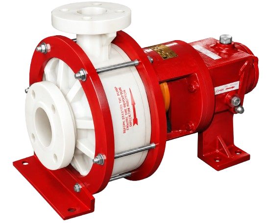

Horizontal single-stage molded polypropylene process pump designed for reliable handling of acids, chemicals, corrosive liquids and demanding industrial process fluids.

The AMTPP Series Polypropylene Process Pump is a horizontal single-stage molded polypropylene centrifugal pump developed for industrial applications involving chemicals, acids and corrosive process liquids.
The pump uses corrosion-resistant construction and is available with different sealing arrangements according to the liquid, temperature and operating requirements. This makes the AMTPP Series suitable for chemical transfer, acid transfer, water treatment, effluent treatment and industrial process applications.
With molded polypropylene wetted components and application- specific material and sealing options, the AMTPP Series provides a practical solution where conventional metallic pumps may require additional corrosion protection.
The following operating range is based on the AMTPP Series product brochure. Actual selection should be confirmed against the required duty point and application.
| Parameter | AMTPP Series |
|---|---|
| Pump Type | Horizontal Single-Stage Centrifugal Pump |
| Construction | Molded Polypropylene |
| Capacity | Up to 80 m³/hr |
| Total Delivery Head | Up to 6 m |
| Pump Size | 15–150 mm |
| Speed – 50 Hz | 1440 / 2880 RPM |
| Speed – 60 Hz | 1750 / 3500 RPM |
| Maximum Temperature | Up to 110°C |
The AMTPP range includes different pump models for application-specific flow and process requirements. Final model selection should be confirmed according to the required duty point.
Designed for dependable handling of corrosive industrial liquids with application-specific construction and sealing.
Wetted components are manufactured using molded polypropylene construction for corrosion-resistant process applications.
Suitable for a wide range of acids, chemicals and corrosive process fluids when correctly selected for the application.
Mechanical seal and PTFE gland packing arrangements can be selected according to the liquid and operating conditions.
Developed for continuous industrial applications including chemical processing, water treatment and corrosive liquid transfer.

AMTPP Series pumps are designed as single-stage horizontal molded polypropylene pumps for handling corrosive liquids in industrial environments.
The pump construction is suitable for applications where chemical resistance, reliable liquid handling and application-specific sealing are important.
Material selection can be matched to the application, chemical compatibility and operating conditions.
| Component | Available Material / Construction |
|---|---|
| Casing | Molded PP / PVDF / UHMW |
| Impeller | Molded PP / PVDF / UHMW |
| Casing Cover | Molded PP / PVDF / UHMW |
| Shaft Sleeve | Ceramic / Alloy-20 |
| Bearing Housing | Cast Iron / Cast Steel |
| Shaft | EN-9 / SS304 / SS316 |
Correct sealing selection is important when handling acids, chemicals and corrosive process liquids. AMTPP Series pumps can be configured with suitable sealing arrangements according to the application.
Ceramic, GFT or silicon face options with Teflon / GFT bellows according to application.
Suitable sealing configurations can be selected based on chemical compatibility and service duty.
PTFE impregnated graphite gland packing is available for continuous industrial use.
Seal material and arrangement should be selected based on chemical compatibility, temperature, pressure and operating conditions.
Discuss Your Application →The appropriate thermoplastic material should be selected according to liquid compatibility and operating temperature. The values below represent the product brochure range and should be considered together with actual application conditions.
Suitable for a wide range of chemical, corrosive and industrial process liquid handling applications.
Chemical dosing and transfer applications in water treatment systems.
Corrosive liquid transfer in industrial effluent treatment processes.
Handling acids, chemicals and corrosive process fluids.
Chemical process and corrosive liquid handling duties.
Chemical and process fluid transfer applications.
Corrosive chemical and process liquid transfer.
Acid and chemical transfer in metal treatment processes.
Chemical handling applications requiring corrosion-resistant pump construction.
Scrubbing systems for corrosive gases such as chlorine, bromine, sulphur dioxide, ammonia and fluorine.
Chemical circulation and descaling of tubes and industrial equipment.
Process liquid circulation and related industrial duties.
Transfer of concentrated acids such as HCl when correctly selected for the application.
Molded polypropylene construction provides a practical solution for corrosive liquid handling.
Mechanical seal and gland packing options allow the pump to be selected for different process conditions.
Suitable for chemical, acid, water treatment, pharmaceutical and other industrial process duties.
Material selection can be matched with chemical compatibility and operating temperature requirements.
The AMTPP Series is a horizontal single-stage molded polypropylene process pump designed for handling acids, chemicals, corrosive liquids and industrial process fluids.
A PP acid pump is used to transfer compatible acids and corrosive liquids in applications such as chemical plants, pickling plants, water treatment systems and industrial process plants.
Yes. The AMTPP Series is designed for chemical process and corrosive liquid transfer applications. Material and seal selection should always be confirmed against the specific chemical and operating conditions.
The AMTPP Series is designed for applications up to approximately 110°C. Actual allowable temperature depends on material, chemical compatibility, sealing arrangement and operating conditions.
Pump selection generally requires information such as liquid name, concentration, flow rate, required head, operating temperature, specific gravity, viscosity and suction conditions.
Yes. AMTPP Series pumps are suitable for various water treatment and effluent treatment applications involving compatible chemicals and corrosive process liquids.
Share your liquid, flow rate, head and temperature requirements and our team can help you identify a suitable AMTPP Series configuration.